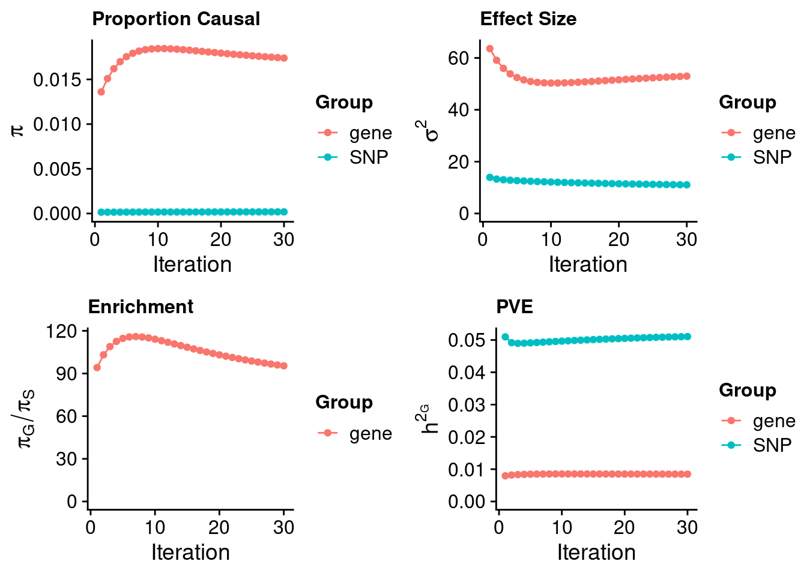

LDL - Liver
sheng Qian
2022-10-18
Last updated: 2023-01-23
Checks: 5 2
Knit directory: cTWAS_analysis/
This reproducible R Markdown analysis was created with workflowr (version 1.7.0). The Checks tab describes the reproducibility checks that were applied when the results were created. The Past versions tab lists the development history.
The R Markdown is untracked by Git. To know which version of the R Markdown file created these results, you’ll want to first commit it to the Git repo. If you’re still working on the analysis, you can ignore this warning. When you’re finished, you can run wflow_publish to commit the R Markdown file and build the HTML.
Great job! The global environment was empty. Objects defined in the global environment can affect the analysis in your R Markdown file in unknown ways. For reproduciblity it’s best to always run the code in an empty environment.
The command set.seed(20211220) was run prior to running the code in the R Markdown file. Setting a seed ensures that any results that rely on randomness, e.g. subsampling or permutations, are reproducible.
Great job! Recording the operating system, R version, and package versions is critical for reproducibility.
Nice! There were no cached chunks for this analysis, so you can be confident that you successfully produced the results during this run.
Using absolute paths to the files within your workflowr project makes it difficult for you and others to run your code on a different machine. Change the absolute path(s) below to the suggested relative path(s) to make your code more reproducible.
| absolute | relative |
|---|---|
| /project2/xinhe/shengqian/cTWAS/cTWAS_analysis/data/ | data |
| /project2/xinhe/shengqian/cTWAS/cTWAS_analysis/code/ctwas_config_b38.R | code/ctwas_config_b38.R |
Great! You are using Git for version control. Tracking code development and connecting the code version to the results is critical for reproducibility.
The results in this page were generated with repository version 7bfdf38. See the Past versions tab to see a history of the changes made to the R Markdown and HTML files.
Note that you need to be careful to ensure that all relevant files for the analysis have been committed to Git prior to generating the results (you can use wflow_publish or wflow_git_commit). workflowr only checks the R Markdown file, but you know if there are other scripts or data files that it depends on. Below is the status of the Git repository when the results were generated:
Ignored files:
Ignored: .Rhistory
Ignored: .ipynb_checkpoints/
Untracked files:
Untracked: Proposal plots.R
Untracked: RGS14.pdf
Untracked: RNF186.pdf
Untracked: SCZ_annotation.xlsx
Untracked: SLC8B1.pdf
Untracked: analysis/.ipynb_checkpoints/
Untracked: analysis/LDL_Liver_GTEX.Rmd
Untracked: analysis/LDL_Liver_mashr.Rmd
Untracked: analysis/LDL_Liver_mashr_lite.Rmd
Untracked: cache/
Untracked: code/.ipynb_checkpoints/
Untracked: code/LDL_out/LDL_Liver_GTEX.err
Untracked: code/LDL_out/LDL_Liver_GTEX.out
Untracked: code/LDL_out/LDL_Liver_mashr.err
Untracked: code/LDL_out/LDL_Liver_mashr.out
Untracked: code/LDL_out/LDL_Liver_mashr_lite.err
Untracked: code/LDL_out/LDL_Liver_mashr_lite.out
Untracked: code/run_LDL_analysis_single_test.sbatch
Untracked: code/run_LDL_analysis_single_test.sh
Untracked: code/run_LDL_ctwas_rss_LDR_single_test.R
Untracked: data/.ipynb_checkpoints/
Untracked: data/FUMA_output/
Untracked: data/GO_Terms/
Untracked: data/GTEx_Analysis_v8_eQTL.tar
Untracked: data/IBD_ME/
Untracked: data/LDL/
Untracked: data/LDL_E_S/
Untracked: data/LDL_M/
Untracked: data/LDL_S/
Untracked: data/LDL_multi/
Untracked: data/PGC3_SCZ_wave3_public.v2.tsv
Untracked: data/SCZ/
Untracked: data/SCZ_2014_EUR/
Untracked: data/SCZ_2014_EUR_ME/
Untracked: data/SCZ_2018/
Untracked: data/SCZ_2018_ME/
Untracked: data/SCZ_2018_S/
Untracked: data/SCZ_2020/
Untracked: data/SCZ_S/
Untracked: data/Supplementary Table 15 - MAGMA.xlsx
Untracked: data/Supplementary Table 20 - Prioritised Genes.xlsx
Untracked: data/UKBB/
Untracked: data/UKBB_SNPs_Info.text
Untracked: data/eqtl/
Untracked: data/gene_OMIM.txt
Untracked: data/gene_pip_0.8.txt
Untracked: data/gwas_sumstats/
Untracked: data/magma.genes.out
Untracked: data/mashr_Heart_Atrial_Appendage.db
Untracked: data/mashr_sqtl/
Untracked: data/mqtl/
Untracked: data/multigroup/
Untracked: data/notes.txt
Untracked: data/scz_2018.RDS
Untracked: data/summary_known_genes_annotations.xlsx
Untracked: temp_LDR/
Untracked: top_genes_32.txt
Untracked: top_genes_37.txt
Untracked: top_genes_43.txt
Untracked: top_genes_54.txt
Untracked: top_genes_81.txt
Untracked: z_snp_pos_SCZ.RData
Untracked: z_snp_pos_SCZ_2014_EUR.RData
Untracked: z_snp_pos_SCZ_2018.RData
Untracked: z_snp_pos_SCZ_2020.RData
Unstaged changes:
Deleted: analysis/BMI_S_results.Rmd
Modified: analysis/index.Rmd
Deleted: code/run_IBD_ctwas_rss_LDR_ME.R
Note that any generated files, e.g. HTML, png, CSS, etc., are not included in this status report because it is ok for generated content to have uncommitted changes.
There are no past versions. Publish this analysis with wflow_publish() to start tracking its development.
Weight QC
[1] 11502[1] 3159
1 2 3 4 5 6 7 8 9 10 11 12 13 14 15 16 17 18 19 20
303 212 161 125 140 200 169 111 120 118 187 178 52 100 102 172 194 47 238 91
21 22
45 94 [1] 1Load ctwas results
Check convergence of parameters

gene snp
0.001823 0.001739 gene snp
11.07 52.98 [1] 1.048[1] 343621[1] 3159 8696600 gene snp
0.0001855 2.3315048 [1] 2.332 gene
7.954e-05 Genes with highest PIPs
#distribution of PIPs
hist(ctwas_gene_res$susie_pip, xlim=c(0,1), main="Distribution of Gene PIPs")#genes with PIP>0.8 or 20 highest PIPs
head(ctwas_gene_res[order(-ctwas_gene_res$susie_pip),report_cols], max(sum(ctwas_gene_res$susie_pip>0.8), 20)) genename region_tag susie_pip mu2 PVE z num_eqtl
4433 PSRC1 1_67 1.0000 1676.75 4.880e-03 -41.687 1
11327 HPR 16_38 1.0000 452.14 1.316e-03 -16.590 1
NA.365 <NA> 1_121 0.9997 204.92 5.962e-04 -15.108 1
4315 ANGPTL3 1_39 0.9964 251.54 7.294e-04 16.132 1
8523 TNKS 8_12 0.9955 77.42 2.243e-04 10.918 1
5988 FADS1 11_34 0.9952 156.60 4.536e-04 12.587 1
1597 PLTP 20_28 0.9920 61.78 1.784e-04 -5.732 1
10708 NYNRIN 14_3 0.9917 58.17 1.679e-04 7.679 1
9365 GAS6 13_62 0.9908 71.37 2.058e-04 -8.924 1
2092 SP4 7_19 0.9807 103.07 2.941e-04 10.693 1
6090 CSNK1G3 5_75 0.9800 84.95 2.423e-04 9.116 1
6774 PKN3 9_66 0.9791 48.00 1.368e-04 -6.621 1
11257 CYP2A6 19_28 0.9757 32.76 9.303e-05 5.407 1
9251 ZNF329 19_39 0.9695 107.38 3.030e-04 10.059 1
2454 ST3GAL4 11_77 0.9508 82.25 2.276e-04 11.943 1
9046 KLHDC7A 1_13 0.8879 21.57 5.573e-05 4.124 1
6615 TMED4 7_32 0.8801 55.44 1.420e-04 9.455 1
3720 INSIG2 2_69 0.8789 45.34 1.160e-04 -6.998 1
9054 SPTY2D1 11_13 0.8656 33.81 8.518e-05 -5.557 1
6097 ALLC 2_2 0.8554 28.16 7.009e-05 4.919 1
1309 FMO2 1_84 0.8521 27.55 6.832e-05 4.821 1Genes with largest effect sizes
#plot PIP vs effect size
plot(ctwas_gene_res$susie_pip, ctwas_gene_res$mu2, xlab="PIP", ylab="mu^2", main="Gene PIPs vs Effect Size")
#genes with 20 largest effect sizes
head(ctwas_gene_res[order(-ctwas_gene_res$mu2),report_cols],20) genename region_tag susie_pip mu2 PVE z num_eqtl
5797 SLC22A3 6_104 0.000e+00 6380.59 0.000e+00 -6.593 1
10399 LPA 6_104 0.000e+00 1997.74 0.000e+00 8.120 1
4433 PSRC1 1_67 1.000e+00 1676.75 4.880e-03 -41.687 1
11327 HPR 16_38 1.000e+00 452.14 1.316e-03 -16.590 1
NA.122 <NA> 6_104 0.000e+00 353.45 0.000e+00 -8.475 1
4315 ANGPTL3 1_39 9.964e-01 251.54 7.294e-04 16.132 1
NA.159 <NA> 8_83 4.677e-03 243.37 3.313e-06 14.404 1
NA.365 <NA> 1_121 9.997e-01 204.92 5.962e-04 -15.108 1
11471 PKD1L3 16_38 2.693e-06 176.63 1.384e-09 4.999 1
5988 FADS1 11_34 9.952e-01 156.60 4.536e-04 12.587 1
9251 ZNF329 19_39 9.695e-01 107.38 3.030e-04 10.059 1
2092 SP4 7_19 9.807e-01 103.07 2.941e-04 10.693 1
781 PVR 19_31 0.000e+00 102.05 0.000e+00 -3.544 1
9910 RHCE 1_18 4.153e-01 101.60 1.228e-04 10.264 1
4047 NECTIN2 19_31 0.000e+00 100.08 0.000e+00 5.825 1
9718 CEACAM19 19_31 0.000e+00 99.39 0.000e+00 -10.909 1
9428 TMEM50A 1_18 8.126e-02 98.23 2.323e-05 10.082 1
2309 KPNB1 17_27 3.386e-01 98.00 9.656e-05 -9.909 1
9438 EMILIN3 20_25 2.540e-02 93.34 6.901e-06 9.502 1
6090 CSNK1G3 5_75 9.800e-01 84.95 2.423e-04 9.116 1Genes with highest PVE
#genes with 20 highest pve
head(ctwas_gene_res[order(-ctwas_gene_res$PVE),report_cols],20) genename region_tag susie_pip mu2 PVE z num_eqtl
4433 PSRC1 1_67 1.0000 1676.75 4.880e-03 -41.687 1
11327 HPR 16_38 1.0000 452.14 1.316e-03 -16.590 1
4315 ANGPTL3 1_39 0.9964 251.54 7.294e-04 16.132 1
NA.365 <NA> 1_121 0.9997 204.92 5.962e-04 -15.108 1
5988 FADS1 11_34 0.9952 156.60 4.536e-04 12.587 1
9251 ZNF329 19_39 0.9695 107.38 3.030e-04 10.059 1
2092 SP4 7_19 0.9807 103.07 2.941e-04 10.693 1
6090 CSNK1G3 5_75 0.9800 84.95 2.423e-04 9.116 1
2454 ST3GAL4 11_77 0.9508 82.25 2.276e-04 11.943 1
8523 TNKS 8_12 0.9955 77.42 2.243e-04 10.918 1
9365 GAS6 13_62 0.9908 71.37 2.058e-04 -8.924 1
1597 PLTP 20_28 0.9920 61.78 1.784e-04 -5.732 1
10708 NYNRIN 14_3 0.9917 58.17 1.679e-04 7.679 1
6615 TMED4 7_32 0.8801 55.44 1.420e-04 9.455 1
6774 PKN3 9_66 0.9791 48.00 1.368e-04 -6.621 1
9910 RHCE 1_18 0.4153 101.60 1.228e-04 10.264 1
3720 INSIG2 2_69 0.8789 45.34 1.160e-04 -6.998 1
2309 KPNB1 17_27 0.3386 98.00 9.656e-05 -9.909 1
11257 CYP2A6 19_28 0.9757 32.76 9.303e-05 5.407 1
9054 SPTY2D1 11_13 0.8656 33.81 8.518e-05 -5.557 1Genes with largest z scores
#genes with 20 largest z scores
head(ctwas_gene_res[order(-abs(ctwas_gene_res$z)),report_cols],20) genename region_tag susie_pip mu2 PVE z num_eqtl
4433 PSRC1 1_67 1.000000 1676.75 4.880e-03 -41.687 1
11327 HPR 16_38 1.000000 452.14 1.316e-03 -16.590 1
4315 ANGPTL3 1_39 0.996428 251.54 7.294e-04 16.132 1
NA.365 <NA> 1_121 0.999665 204.92 5.962e-04 -15.108 1
NA.159 <NA> 8_83 0.004677 243.37 3.313e-06 14.404 1
5988 FADS1 11_34 0.995191 156.60 4.536e-04 12.587 1
2454 ST3GAL4 11_77 0.950820 82.25 2.276e-04 11.943 1
8523 TNKS 8_12 0.995525 77.42 2.243e-04 10.918 1
9718 CEACAM19 19_31 0.000000 99.39 0.000e+00 -10.909 1
2092 SP4 7_19 0.980670 103.07 2.941e-04 10.693 1
9910 RHCE 1_18 0.415254 101.60 1.228e-04 10.264 1
9428 TMEM50A 1_18 0.081259 98.23 2.323e-05 10.082 1
9251 ZNF329 19_39 0.969485 107.38 3.030e-04 10.059 1
2309 KPNB1 17_27 0.338600 98.00 9.656e-05 -9.909 1
9438 EMILIN3 20_25 0.025404 93.34 6.901e-06 9.502 1
6615 TMED4 7_32 0.880091 55.44 1.420e-04 9.455 1
6090 CSNK1G3 5_75 0.980012 84.95 2.423e-04 9.116 1
9365 GAS6 13_62 0.990760 71.37 2.058e-04 -8.924 1
11016 APOC2 19_31 0.000000 53.52 0.000e+00 -8.870 1
11372 APOC4 19_31 0.000000 51.50 0.000e+00 8.735 1Comparing z scores and PIPs
#set nominal signifiance threshold for z scores
alpha <- 0.05
#bonferroni adjusted threshold for z scores
sig_thresh <- qnorm(1-(alpha/nrow(ctwas_gene_res)/2), lower=T)
#Q-Q plot for z scores
obs_z <- ctwas_gene_res$z[order(ctwas_gene_res$z)]
exp_z <- qnorm((1:nrow(ctwas_gene_res))/nrow(ctwas_gene_res))
plot(exp_z, obs_z, xlab="Expected z", ylab="Observed z", main="Gene z score Q-Q plot")
abline(a=0,b=1)#plot z score vs PIP
plot(abs(ctwas_gene_res$z), ctwas_gene_res$susie_pip, xlab="abs(z)", ylab="PIP")
abline(v=sig_thresh, col="red", lty=2)#number of significant z scores
sum(abs(ctwas_gene_res$z) > sig_thresh)[1] 101#proportion of significant z scores
mean(abs(ctwas_gene_res$z) > sig_thresh)[1] 0.03197#genes with most significant z scores
head(ctwas_gene_res[order(-abs(ctwas_gene_res$z)),report_cols],20) genename region_tag susie_pip mu2 PVE z num_eqtl
4433 PSRC1 1_67 1.000000 1676.75 4.880e-03 -41.687 1
11327 HPR 16_38 1.000000 452.14 1.316e-03 -16.590 1
4315 ANGPTL3 1_39 0.996428 251.54 7.294e-04 16.132 1
NA.365 <NA> 1_121 0.999665 204.92 5.962e-04 -15.108 1
NA.159 <NA> 8_83 0.004677 243.37 3.313e-06 14.404 1
5988 FADS1 11_34 0.995191 156.60 4.536e-04 12.587 1
2454 ST3GAL4 11_77 0.950820 82.25 2.276e-04 11.943 1
8523 TNKS 8_12 0.995525 77.42 2.243e-04 10.918 1
9718 CEACAM19 19_31 0.000000 99.39 0.000e+00 -10.909 1
2092 SP4 7_19 0.980670 103.07 2.941e-04 10.693 1
9910 RHCE 1_18 0.415254 101.60 1.228e-04 10.264 1
9428 TMEM50A 1_18 0.081259 98.23 2.323e-05 10.082 1
9251 ZNF329 19_39 0.969485 107.38 3.030e-04 10.059 1
2309 KPNB1 17_27 0.338600 98.00 9.656e-05 -9.909 1
9438 EMILIN3 20_25 0.025404 93.34 6.901e-06 9.502 1
6615 TMED4 7_32 0.880091 55.44 1.420e-04 9.455 1
6090 CSNK1G3 5_75 0.980012 84.95 2.423e-04 9.116 1
9365 GAS6 13_62 0.990760 71.37 2.058e-04 -8.924 1
11016 APOC2 19_31 0.000000 53.52 0.000e+00 -8.870 1
11372 APOC4 19_31 0.000000 51.50 0.000e+00 8.735 1SNPs with highest PIPs
#snps with PIP>0.8 or 20 highest PIPs
head(ctwas_snp_res[order(-ctwas_snp_res$susie_pip),report_cols_snps],
max(sum(ctwas_snp_res$susie_pip>0.8), 20)) id region_tag susie_pip mu2 PVE z
14831 rs2495502 1_34 1.0000 300.73 8.752e-04 6.2922
68843 rs1042034 2_13 1.0000 237.63 6.915e-04 16.5730
68849 rs934197 2_13 1.0000 414.98 1.208e-03 33.0609
70579 rs780093 2_16 1.0000 167.21 4.866e-04 -14.1426
368612 rs12208357 6_103 1.0000 244.15 7.105e-04 12.2823
368715 rs60425481 6_104 1.0000 34617.58 1.007e-01 -7.1125
761755 rs113408695 17_39 1.0000 146.62 4.267e-04 12.7688
795613 rs73013176 19_9 1.0000 240.92 7.011e-04 -16.2327
805450 rs62117204 19_31 1.0000 825.83 2.403e-03 -44.6722
805468 rs111794050 19_31 1.0000 771.38 2.245e-03 -33.5996
805501 rs814573 19_31 1.0000 2231.68 6.495e-03 55.5379
805503 rs113345881 19_31 1.0000 781.13 2.273e-03 -34.3186
805506 rs12721109 19_31 1.0000 1355.57 3.945e-03 -46.3258
798144 rs3794991 19_15 1.0000 435.64 1.268e-03 -21.4921
761781 rs8070232 17_39 1.0000 152.14 4.428e-04 -8.0915
816677 rs34507316 20_13 1.0000 80.71 2.349e-04 -6.8147
68794 rs11679386 2_12 1.0000 132.05 3.843e-04 11.9094
68929 rs1848922 2_13 1.0000 231.66 6.742e-04 25.4123
68852 rs548145 2_13 1.0000 664.99 1.935e-03 33.0860
496315 rs2437818 9_53 1.0000 69.92 2.035e-04 6.3340
1015362 rs1800961 20_28 1.0000 72.56 2.112e-04 -8.8970
504532 rs115478735 9_70 1.0000 307.40 8.946e-04 19.0118
805841 rs150262789 19_32 1.0000 77.88 2.266e-04 -10.8985
760839 rs1801689 17_38 1.0000 80.97 2.356e-04 9.3964
805164 rs73036721 19_30 1.0000 58.65 1.707e-04 -7.7879
443063 rs4738679 8_45 1.0000 108.15 3.147e-04 -11.6999
274809 rs1499279 5_30 1.0000 62.03 1.805e-04 -8.3746
76644 rs72800939 2_28 1.0000 55.98 1.629e-04 -7.8457
795651 rs137992968 19_9 1.0000 114.51 3.333e-04 -10.7526
14842 rs10888896 1_34 1.0000 134.32 3.909e-04 11.8938
7646 rs79598313 1_18 1.0000 46.89 1.365e-04 7.0246
462724 rs13252684 8_83 1.0000 227.38 6.617e-04 11.9644
441668 rs140753685 8_42 1.0000 55.16 1.605e-04 7.7992
805209 rs62115478 19_30 1.0000 183.16 5.330e-04 -14.3262
52998 rs2807848 1_112 1.0000 54.88 1.597e-04 -7.8828
14801 rs11580527 1_34 1.0000 88.52 2.576e-04 -11.1672
14849 rs471705 1_34 1.0000 210.38 6.122e-04 16.2630
350049 rs9496567 6_67 1.0000 38.86 1.131e-04 -6.3402
319854 rs11376017 6_13 0.9999 65.40 1.903e-04 -8.5079
795677 rs4804149 19_10 0.9999 46.15 1.343e-04 6.5194
816676 rs6075251 20_13 0.9998 53.98 1.571e-04 -2.3298
798175 rs113619686 19_15 0.9998 56.13 1.633e-04 0.5939
76508 rs139029940 2_27 0.9997 39.11 1.138e-04 6.8150
703812 rs2070895 15_26 0.9996 58.63 1.706e-04 7.7347
368803 rs374071816 6_104 0.9996 6415.76 1.866e-02 16.2541
795642 rs1569372 19_9 0.9993 278.34 8.095e-04 10.0055
542886 rs17875416 10_71 0.9993 37.72 1.097e-04 -6.2663
795637 rs3745677 19_9 0.9993 90.85 2.642e-04 9.3358
795730 rs322144 19_10 0.9992 56.74 1.650e-04 3.9466
323940 rs454182 6_22 0.9992 35.39 1.029e-04 4.7791
609330 rs7397189 12_36 0.9991 34.12 9.920e-05 -5.7710
496288 rs2297400 9_53 0.9989 40.92 1.190e-04 6.6057
795634 rs147985405 19_9 0.9986 2286.17 6.644e-03 -48.9352
281261 rs7701166 5_44 0.9986 33.45 9.719e-05 -2.4848
797784 rs2302209 19_14 0.9981 42.79 1.243e-04 6.6360
431395 rs1495743 8_20 0.9978 40.73 1.183e-04 -6.5160
740565 rs2255451 16_48 0.9959 38.08 1.104e-04 -6.3628
585721 rs3135506 11_70 0.9956 147.38 4.270e-04 12.3730
443031 rs56386732 8_45 0.9955 34.46 9.983e-05 -7.0123
585726 rs75542613 11_70 0.9954 35.61 1.032e-04 -6.5344
821630 rs76981217 20_24 0.9953 35.23 1.020e-04 7.6925
324377 rs3130253 6_23 0.9942 29.66 8.583e-05 5.6415
613696 rs148481241 12_44 0.9929 27.35 7.902e-05 5.0955
625914 rs653178 12_67 0.9924 92.80 2.680e-04 11.0501
281202 rs10062361 5_44 0.9869 202.05 5.803e-04 20.3206
806761 rs838145 19_33 0.9856 97.91 2.809e-04 -11.8738
735238 rs4396539 16_37 0.9854 27.36 7.847e-05 -5.2329
137892 rs709149 3_9 0.9851 35.61 1.021e-04 -6.7820
325162 rs28780090 6_24 0.9829 49.14 1.406e-04 6.8714
404191 rs3197597 7_61 0.9818 29.19 8.339e-05 -5.0452
630003 rs11057830 12_76 0.9809 25.68 7.330e-05 4.9296
325185 rs62407548 6_24 0.9802 63.62 1.815e-04 8.2573
144902 rs9834932 3_24 0.9801 65.63 1.872e-04 -8.4816
821581 rs6029132 20_24 0.9795 39.13 1.115e-04 -6.7625
821634 rs73124945 20_24 0.9793 32.10 9.150e-05 -7.7754
388423 rs141379002 7_33 0.9720 25.45 7.200e-05 4.8970
470776 rs7024888 9_3 0.9695 25.42 7.173e-05 -5.0558
462713 rs79658059 8_83 0.9690 269.87 7.611e-04 -16.0220
244616 rs114756490 4_100 0.9690 26.06 7.349e-05 4.9889
805824 rs34942359 19_32 0.9676 62.00 1.746e-04 -7.0096
829635 rs62219001 21_2 0.9626 25.96 7.273e-05 -4.9484
221887 rs1458038 4_54 0.9600 52.32 1.462e-04 -7.4179
478640 rs1556516 9_16 0.9557 72.76 2.024e-04 -8.9921
594353 rs11048034 12_9 0.9540 35.50 9.856e-05 6.1337
764914 rs4969183 17_44 0.9522 48.50 1.344e-04 7.1693
628868 rs1169300 12_74 0.9474 67.72 1.867e-04 8.6855
323401 rs75080831 6_19 0.9439 56.44 1.550e-04 -7.9067
624007 rs1196760 12_63 0.9412 25.69 7.036e-05 -4.8667
324348 rs28986304 6_23 0.9319 41.73 1.132e-04 7.3825
76524 rs4076834 2_27 0.9314 425.49 1.153e-03 -20.1086
352785 rs12199109 6_73 0.9272 24.50 6.609e-05 4.8570
569350 rs6591179 11_36 0.9265 24.78 6.683e-05 4.8933
193512 rs5855544 3_120 0.9264 23.69 6.387e-05 -4.5937
76521 rs13430143 2_27 0.9231 76.76 2.062e-04 -3.3445
68846 rs78610189 2_13 0.9181 59.17 1.581e-04 -8.3855
368606 rs9456502 6_103 0.9140 33.08 8.798e-05 5.9640
427072 rs117037226 8_11 0.9072 23.62 6.237e-05 4.1922
805741 rs377297589 19_32 0.9063 50.46 1.331e-04 -6.7865
14832 rs1887552 1_34 0.9063 344.07 9.075e-04 -9.8686
751298 rs117859452 17_17 0.9031 24.14 6.345e-05 -3.8517
836876 rs2835302 21_16 0.9017 25.15 6.598e-05 -4.6537
703811 rs139823028 15_26 0.8994 23.59 6.175e-05 3.9898
195299 rs36205397 4_4 0.8993 38.35 1.004e-04 6.1594
169895 rs189174 3_74 0.8954 43.56 1.135e-04 6.7678
731346 rs821840 16_30 0.8951 163.02 4.247e-04 -13.4753
509482 rs10905277 10_8 0.8941 27.80 7.234e-05 5.1258
812322 rs74273659 20_5 0.8931 24.47 6.360e-05 4.6468
197524 rs2002574 4_10 0.8920 24.29 6.304e-05 -4.5583
542597 rs12244851 10_70 0.8902 36.36 9.420e-05 -4.8831
795718 rs322125 19_10 0.8873 101.66 2.625e-04 -7.4704
751207 rs3032928 17_17 0.8835 33.72 8.669e-05 6.1119
496308 rs2777788 9_53 0.8783 57.78 1.477e-04 -5.7370
581990 rs201912654 11_59 0.8714 39.91 1.012e-04 -6.3056
825133 rs10641149 20_32 0.8687 26.93 6.807e-05 5.0758
638890 rs1012130 13_10 0.8681 38.76 9.792e-05 -2.7810
848964 rs145678077 22_17 0.8565 24.69 6.154e-05 -4.8686
119989 rs7569317 2_120 0.8546 44.04 1.095e-04 7.9007
68646 rs6531234 2_12 0.8543 42.09 1.046e-04 -7.1708
795687 rs58495388 19_10 0.8501 33.71 8.338e-05 5.5313
486626 rs11144506 9_35 0.8486 26.90 6.644e-05 5.0427
358988 rs9321207 6_86 0.8475 30.33 7.481e-05 5.4016
821599 rs6102034 20_24 0.8443 96.35 2.367e-04 -11.1900
281225 rs3843482 5_44 0.8372 395.85 9.645e-04 25.0344
820375 rs11167269 20_21 0.8326 56.80 1.376e-04 -7.7950
756426 rs4793601 17_28 0.8268 30.55 7.352e-05 -6.2095
816657 rs78348000 20_13 0.8209 30.02 7.171e-05 5.2206
536776 rs10882161 10_59 0.8165 29.78 7.076e-05 -5.4756
761766 rs9303012 17_39 0.8164 144.47 3.432e-04 2.2591
638882 rs1799955 13_10 0.8149 69.86 1.657e-04 -6.6936
793033 rs12459030 19_4 0.8133 24.48 5.794e-05 -4.3721
722803 rs35782593 16_12 0.8132 24.15 5.716e-05 -4.3189SNPs with largest effect sizes
#plot PIP vs effect size
#plot(ctwas_snp_res$susie_pip, ctwas_snp_res$mu2, xlab="PIP", ylab="mu^2", main="SNP PIPs vs Effect Size")
#SNPs with 50 largest effect sizes
head(ctwas_snp_res[order(-ctwas_snp_res$mu2),report_cols_snps],50) id region_tag susie_pip mu2 PVE z
368711 rs3106169 6_104 6.210e-01 34666 6.265e-02 11.139
368712 rs3127598 6_104 4.710e-01 34665 4.752e-02 11.135
368720 rs3106167 6_104 4.787e-01 34665 4.829e-02 11.136
368704 rs11755965 6_104 1.257e-01 34655 1.268e-02 11.140
368715 rs60425481 6_104 1.000e+00 34618 1.007e-01 -7.113
368695 rs12194962 6_104 4.484e-07 34582 4.512e-08 11.106
368713 rs3127597 6_104 7.406e-08 34560 7.448e-09 11.145
368674 rs3119311 6_104 0.000e+00 25050 0.000e+00 8.031
368668 rs3127579 6_104 0.000e+00 18252 0.000e+00 7.568
368662 rs10945658 6_104 0.000e+00 15988 0.000e+00 8.309
368657 rs3103352 6_104 0.000e+00 15952 0.000e+00 8.522
368661 rs3119308 6_104 0.000e+00 15949 0.000e+00 8.274
368653 rs3101821 6_104 0.000e+00 15896 0.000e+00 8.528
368659 rs12205178 6_104 0.000e+00 15859 0.000e+00 8.297
368651 rs148015788 6_104 0.000e+00 15660 0.000e+00 8.351
368762 rs3124784 6_104 0.000e+00 13154 0.000e+00 9.680
368763 rs3127596 6_104 0.000e+00 11943 0.000e+00 9.556
368756 rs3127599 6_104 0.000e+00 11880 0.000e+00 9.259
368726 rs2481030 6_104 0.000e+00 11348 0.000e+00 4.811
368691 rs2504949 6_104 0.000e+00 9336 0.000e+00 2.937
368744 rs388170 6_104 0.000e+00 8646 0.000e+00 3.833
368666 rs316013 6_104 0.000e+00 8286 0.000e+00 -3.002
368667 rs316012 6_104 0.000e+00 8187 0.000e+00 -3.074
368747 rs9355288 6_104 0.000e+00 8030 0.000e+00 6.319
368655 rs610206 6_104 0.000e+00 7566 0.000e+00 -2.944
368656 rs595374 6_104 0.000e+00 7551 0.000e+00 -2.921
368663 rs315995 6_104 0.000e+00 7369 0.000e+00 -3.207
368660 rs543435 6_104 0.000e+00 7342 0.000e+00 -3.250
368709 rs452867 6_104 0.000e+00 6963 0.000e+00 -7.124
368718 rs367334 6_104 0.000e+00 6958 0.000e+00 -7.106
368706 rs589931 6_104 0.000e+00 6957 0.000e+00 -7.116
368707 rs600584 6_104 0.000e+00 6957 0.000e+00 -7.113
368708 rs434953 6_104 0.000e+00 6957 0.000e+00 -7.111
368714 rs380498 6_104 0.000e+00 6957 0.000e+00 -7.115
368682 rs3119312 6_104 0.000e+00 6639 0.000e+00 3.771
368803 rs374071816 6_104 9.996e-01 6416 1.866e-02 16.254
368741 rs2872317 6_104 0.000e+00 6123 0.000e+00 6.746
368738 rs2313453 6_104 0.000e+00 6118 0.000e+00 6.718
368808 rs4252185 6_104 4.487e-04 5922 7.732e-06 15.878
368729 rs146184004 6_104 0.000e+00 5824 0.000e+00 6.534
368732 rs624319 6_104 0.000e+00 5759 0.000e+00 -6.291
368731 rs637614 6_104 0.000e+00 5752 0.000e+00 -6.362
368733 rs486339 6_104 0.000e+00 5712 0.000e+00 -6.311
368678 rs316036 6_104 0.000e+00 5610 0.000e+00 -7.009
368730 rs555754 6_104 0.000e+00 5572 0.000e+00 -6.593
368809 rs12212146 6_104 0.000e+00 4422 0.000e+00 -2.410
368676 rs582280 6_104 0.000e+00 4291 0.000e+00 2.635
368675 rs497039 6_104 0.000e+00 4290 0.000e+00 2.634
368759 rs9346818 6_104 0.000e+00 3538 0.000e+00 7.950
368862 rs1247539 6_104 0.000e+00 3483 0.000e+00 -4.294SNPs with highest PVE
#SNPs with 50 highest pve
head(ctwas_snp_res[order(-ctwas_snp_res$PVE),report_cols_snps],50) id region_tag susie_pip mu2 PVE z
368715 rs60425481 6_104 1.0000 34617.58 0.1007435 -7.113
368711 rs3106169 6_104 0.6210 34665.56 0.0626470 11.139
368720 rs3106167 6_104 0.4787 34665.13 0.0482930 11.136
368712 rs3127598 6_104 0.4710 34665.21 0.0475157 11.135
368803 rs374071816 6_104 0.9996 6415.76 0.0186626 16.254
368704 rs11755965 6_104 0.1257 34655.20 0.0126789 11.140
795634 rs147985405 19_9 0.9986 2286.17 0.0066440 -48.935
805501 rs814573 19_31 1.0000 2231.68 0.0064946 55.538
805506 rs12721109 19_31 1.0000 1355.57 0.0039450 -46.326
805450 rs62117204 19_31 1.0000 825.83 0.0024033 -44.672
805503 rs113345881 19_31 1.0000 781.13 0.0022732 -34.319
805468 rs111794050 19_31 1.0000 771.38 0.0022448 -33.600
68852 rs548145 2_13 1.0000 664.99 0.0019352 33.086
798144 rs3794991 19_15 1.0000 435.64 0.0012678 -21.492
68849 rs934197 2_13 1.0000 414.98 0.0012077 33.061
76524 rs4076834 2_27 0.9314 425.49 0.0011533 -20.109
281225 rs3843482 5_44 0.8372 395.85 0.0009645 25.034
14832 rs1887552 1_34 0.9063 344.07 0.0009075 -9.869
504532 rs115478735 9_70 1.0000 307.40 0.0008946 19.012
14831 rs2495502 1_34 1.0000 300.73 0.0008752 6.292
795642 rs1569372 19_9 0.9993 278.34 0.0008095 10.006
462713 rs79658059 8_83 0.9690 269.87 0.0007611 -16.022
368612 rs12208357 6_103 1.0000 244.15 0.0007105 12.282
795613 rs73013176 19_9 1.0000 240.92 0.0007011 -16.233
68843 rs1042034 2_13 1.0000 237.63 0.0006915 16.573
68929 rs1848922 2_13 1.0000 231.66 0.0006742 25.412
462724 rs13252684 8_83 1.0000 227.38 0.0006617 11.964
14849 rs471705 1_34 1.0000 210.38 0.0006122 16.263
281202 rs10062361 5_44 0.9869 202.05 0.0005803 20.321
805209 rs62115478 19_30 1.0000 183.16 0.0005330 -14.326
70579 rs780093 2_16 1.0000 167.21 0.0004866 -14.143
761781 rs8070232 17_39 1.0000 152.14 0.0004428 -8.091
368626 rs3818678 6_103 0.7665 197.23 0.0004399 -9.948
585721 rs3135506 11_70 0.9956 147.38 0.0004270 12.373
761755 rs113408695 17_39 1.0000 146.62 0.0004267 12.769
731346 rs821840 16_30 0.8951 163.02 0.0004247 -13.475
14842 rs10888896 1_34 1.0000 134.32 0.0003909 11.894
68794 rs11679386 2_12 1.0000 132.05 0.0003843 11.909
761766 rs9303012 17_39 0.8164 144.47 0.0003432 2.259
306104 rs12657266 5_92 0.7522 156.65 0.0003429 13.895
795651 rs137992968 19_9 1.0000 114.51 0.0003333 -10.753
443063 rs4738679 8_45 1.0000 108.15 0.0003147 -11.700
462712 rs2980875 8_83 0.5510 184.92 0.0002965 -22.102
806761 rs838145 19_33 0.9856 97.91 0.0002809 -11.874
625914 rs653178 12_67 0.9924 92.80 0.0002680 11.050
795637 rs3745677 19_9 0.9993 90.85 0.0002642 9.336
795718 rs322125 19_10 0.8873 101.66 0.0002625 -7.470
14801 rs11580527 1_34 1.0000 88.52 0.0002576 -11.167
821775 rs11086801 20_25 0.7818 106.07 0.0002413 10.975
821599 rs6102034 20_24 0.8443 96.35 0.0002367 -11.190SNPs with largest z scores
#histogram of (abs) SNP z scores
hist(abs(ctwas_snp_res$z))#SNPs with 50 largest z scores
head(ctwas_snp_res[order(-abs(ctwas_snp_res$z)),report_cols_snps],50) id region_tag susie_pip mu2 PVE z
805501 rs814573 19_31 1.000e+00 2231.7 6.495e-03 55.54
795634 rs147985405 19_9 9.986e-01 2286.2 6.644e-03 -48.94
795629 rs73015020 19_9 8.132e-04 2273.9 5.381e-06 -48.80
795627 rs138175288 19_9 3.800e-04 2272.1 2.513e-06 -48.78
795628 rs138294113 19_9 9.208e-05 2268.2 6.078e-07 -48.75
795630 rs77140532 19_9 5.573e-05 2268.7 3.680e-07 -48.74
795631 rs112552009 19_9 2.794e-05 2264.7 1.841e-07 -48.71
795632 rs10412048 19_9 1.129e-05 2265.4 7.443e-08 -48.70
795626 rs55997232 19_9 2.986e-09 2245.0 1.951e-11 -48.52
805506 rs12721109 19_31 1.000e+00 1355.6 3.945e-03 -46.33
805450 rs62117204 19_31 1.000e+00 825.8 2.403e-03 -44.67
805437 rs1551891 19_31 0.000e+00 500.6 0.000e+00 -42.27
875656 rs12740374 1_67 5.982e-04 1473.3 2.565e-06 -41.79
875652 rs7528419 1_67 6.014e-04 1469.3 2.572e-06 -41.74
875663 rs646776 1_67 5.262e-04 1468.1 2.248e-06 41.73
875662 rs629301 1_67 4.946e-04 1464.4 2.108e-06 41.69
875674 rs583104 1_67 5.301e-04 1423.3 2.196e-06 41.09
875677 rs4970836 1_67 5.222e-04 1420.3 2.158e-06 41.05
875679 rs1277930 1_67 5.314e-04 1415.6 2.189e-06 40.98
875680 rs599839 1_67 5.444e-04 1414.6 2.241e-06 40.96
795635 rs17248769 19_9 1.328e-07 1721.5 6.655e-10 -40.84
795636 rs2228671 19_9 9.375e-08 1710.4 4.666e-10 -40.70
875660 rs3832016 1_67 4.039e-04 1375.1 1.616e-06 40.40
875657 rs660240 1_67 4.032e-04 1367.8 1.605e-06 40.29
875675 rs602633 1_67 4.386e-04 1346.1 1.718e-06 39.96
795625 rs9305020 19_9 3.120e-14 1305.6 1.185e-16 -34.84
805497 rs405509 19_31 0.000e+00 976.1 0.000e+00 -34.64
875643 rs4970834 1_67 7.888e-04 1014.8 2.329e-06 -34.62
805503 rs113345881 19_31 1.000e+00 781.1 2.273e-03 -34.32
805421 rs62120566 19_31 0.000e+00 1335.0 0.000e+00 -33.74
805468 rs111794050 19_31 1.000e+00 771.4 2.245e-03 -33.60
68852 rs548145 2_13 1.000e+00 665.0 1.935e-03 33.09
805474 rs4802238 19_31 0.000e+00 979.3 0.000e+00 33.08
68849 rs934197 2_13 1.000e+00 415.0 1.208e-03 33.06
805415 rs188099946 19_31 0.000e+00 1279.7 0.000e+00 -33.04
805485 rs2972559 19_31 0.000e+00 1308.1 0.000e+00 32.29
805409 rs201314191 19_31 0.000e+00 1186.6 0.000e+00 -32.07
875664 rs3902354 1_67 4.510e-04 866.7 1.138e-06 32.00
875653 rs11102967 1_67 4.528e-04 863.2 1.137e-06 31.94
875678 rs4970837 1_67 5.075e-04 859.4 1.269e-06 31.86
805476 rs56394238 19_31 0.000e+00 972.3 0.000e+00 31.55
805453 rs2965169 19_31 0.000e+00 361.2 0.000e+00 -31.38
805477 rs3021439 19_31 0.000e+00 865.7 0.000e+00 31.05
875648 rs611917 1_67 4.313e-04 812.6 1.020e-06 -30.98
68879 rs12997242 2_13 2.825e-11 382.6 3.145e-14 30.82
805484 rs12162222 19_31 0.000e+00 1120.2 0.000e+00 30.50
68853 rs478588 2_13 8.642e-11 612.9 1.541e-13 30.49
805414 rs62119327 19_31 0.000e+00 1044.9 0.000e+00 -30.42
68854 rs56350433 2_13 3.662e-12 350.9 3.740e-15 30.23
68859 rs56079819 2_13 3.669e-12 350.1 3.738e-15 30.19
sessionInfo()R version 4.1.0 (2021-05-18)
Platform: x86_64-pc-linux-gnu (64-bit)
Running under: CentOS Linux 7 (Core)
Matrix products: default
BLAS/LAPACK: /software/openblas-0.3.13-el7-x86_64/lib/libopenblas_haswellp-r0.3.13.so
locale:
[1] LC_CTYPE=en_US.UTF-8 LC_NUMERIC=C
[3] LC_TIME=en_US.UTF-8 LC_COLLATE=en_US.UTF-8
[5] LC_MONETARY=en_US.UTF-8 LC_MESSAGES=en_US.UTF-8
[7] LC_PAPER=en_US.UTF-8 LC_NAME=C
[9] LC_ADDRESS=C LC_TELEPHONE=C
[11] LC_MEASUREMENT=en_US.UTF-8 LC_IDENTIFICATION=C
attached base packages:
[1] stats graphics grDevices utils datasets methods base
other attached packages:
[1] cowplot_1.1.1 ggplot2_3.4.0 workflowr_1.7.0
loaded via a namespace (and not attached):
[1] tidyselect_1.2.0 xfun_0.35 bslib_0.4.1 generics_0.1.3
[5] colorspace_2.0-3 vctrs_0.5.1 htmltools_0.5.4 yaml_2.3.6
[9] utf8_1.2.2 blob_1.2.3 rlang_1.0.6 jquerylib_0.1.4
[13] later_1.3.0 pillar_1.8.1 withr_2.5.0 glue_1.6.2
[17] DBI_1.1.3 bit64_4.0.5 lifecycle_1.0.3 stringr_1.5.0
[21] munsell_0.5.0 gtable_0.3.1 evaluate_0.19 memoise_2.0.1
[25] labeling_0.4.2 knitr_1.41 callr_3.7.3 fastmap_1.1.0
[29] httpuv_1.6.7 ps_1.7.2 fansi_1.0.3 highr_0.9
[33] Rcpp_1.0.9 promises_1.2.0.1 scales_1.2.1 cachem_1.0.6
[37] jsonlite_1.8.4 farver_2.1.0 fs_1.5.2 bit_4.0.5
[41] digest_0.6.31 stringi_1.7.8 processx_3.8.0 dplyr_1.0.10
[45] getPass_0.2-2 rprojroot_2.0.3 grid_4.1.0 cli_3.4.1
[49] tools_4.1.0 magrittr_2.0.3 sass_0.4.4 tibble_3.1.8
[53] RSQLite_2.2.19 whisker_0.4.1 pkgconfig_2.0.3 data.table_1.14.6
[57] assertthat_0.2.1 rmarkdown_2.19 httr_1.4.4 rstudioapi_0.14
[61] R6_2.5.1 git2r_0.30.1 compiler_4.1.0